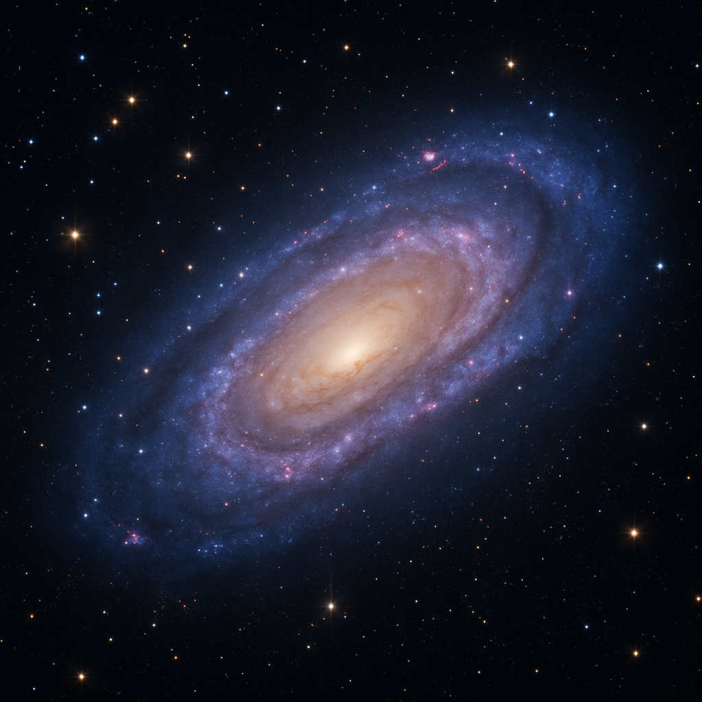

The Universe's history
September 27, 2025 by Romaine Dixon

The universe began 13.8 billion years ago with the Big Bang, an event that created space,
time, and matter from an incredibly hot, dense point that rapidly expanded and cooled,
allowing the formation of the first atomic nuclei (primarily hydrogen and helium) within minutes.
After 380,000 years, the universe cooled enough for electrons to combine with nuclei, forming
neutral atoms and making the cosmos transparent to light, ending the so-called "Dark Ages"
around 400 million years later when gravity pulled matter together to create the first massive
stars and galaxies. These early stars forged heavier elements in their cores and distributed them
throughout space when they exploded as supernovae, providing the raw materials for later generations
of stars, planets, and eventually life itself. Our solar system formed 4.6 billion years ago from this
enriched cosmic material, and today the universe continues to expand at an accelerating rate driven by
the mysterious force called dark energy, with star formation continuing at a much slower pace than during
the universe's more active early epochs.
Demon Slayer: Infinity Castle
September 20, 2025 by Romaine Dixon
As someone who has followed the Demon Slayer journey since the beginning, I can honestly say that no upcoming anime release has me more on edge than the Infinity Castle movie. The wait has been almost unbearable - every teaser, every screenshot, every piece of news sends my excitement through the roof. I've rewatched the previous seasons multiple times, analyzing every detail and preparing myself emotionally for what I know will be an absolutely devastating experience. There's something both thrilling and terrifying about knowing that this movie will fundamentally change everything we've come to love about these characters.
What has me most invested is the promise of Akaza's redemption arc. After seeing glimpses of his tragic backstory as Hakuji, I've been desperately hoping that the anime will give his character the depth and emotional weight he deserves. The idea that this demon who has caused so much pain and destruction might remember his humanity and find some form of peace is both heartbreaking and beautiful. I'm prepared to cry ugly tears when he finally recalls his love for Koyuki and his devotion to protecting the weak - the very values that stand in stark opposition to what he became as a demon. Akaza's potential redemption represents everything I love about Demon Slayer: the belief that even in the darkest circumstances, the human heart can still triumph. I know watching him choose self-destruction over continued existence as a monster will be emotionally devastating, but I'm ready for that catharsis. This movie can't come soon enough, and I have a feeling it's going to ruin me in the best possible way.